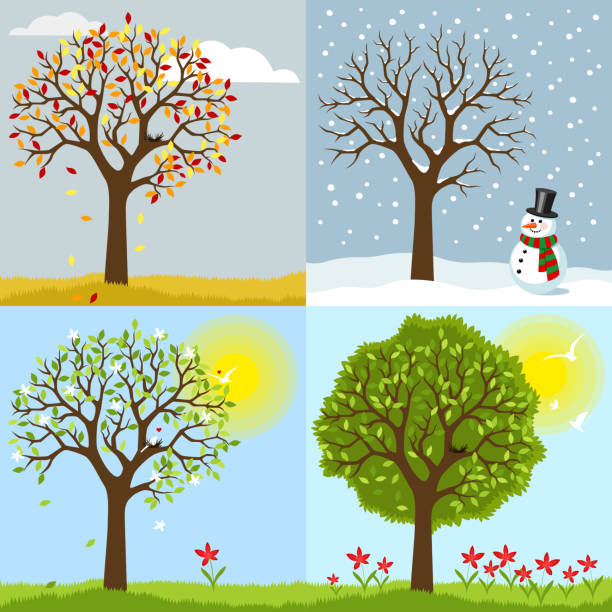

Outfitter for All Seasons!
-
Using JQuery, This page will show you the many different Seasonal Styles for you!

SPRING With March comes in the pleasant spring, When little birds begin to sing; To build their nests, to hatch their brood. With tender care provide them food.SUMMER And summer comes with verdant June; The flowers then are in full bloom, All nature smiles, the fields look gay; The weather's fine to make the hay.
Fall September comes; the golden corn By many busy hands is shorn; Fall's ripe fruits, an ample store, Are gathered in for rich and poor.
WINTER Winter's cold frost and northern blast — This is the season that comes last The snow has come, the sleigh-bells ring, And merry boys rejoice and sing.